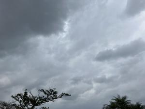

うるがいの話 ある日
最新: 結膜下出血【うるがいの話 ある日】とは 一日だけのプログです
『うるがいの話』の最新一日だけのプログで、通信料が少なく経済的だ。カニの画像をクリックすると全ての日付が載る『うるがいの話』サイトを表示します
|
|
【うるがいの話】 うるがい(ｳﾙｶﾞｲ urugai)とは、『もずくがに』の名前でとても大きくなります。 |
|---|---|
|
|
【カミマヤーの話】 猫のことを方言でマヤーといいます。カミマヤー（kamimayaa）とは、神の猫のことです。 |
|
【たながぁの音楽】 たながぁ（ﾀﾅｶﾞｰ tanagaa）とは手長えびのことで、何種類かあり大きいのは車 エビぐらいになります。 |

|
【ぶながぁの話】 ぶながぁ(ﾌﾞﾅｶﾞｰ bunagaa)とは、赤い髪の毛、赤い身体、そして身長は１ｍ２０ｃｍ ぐらい、川の蟹を食べているの目撃された。場所は沖縄県国頭郡大宜味村のと ある村僕の隣近所に住んでいる爺さんから、聞いた話です。 |
|
|
【ギーマの話】 ギーマ(giima)とは、山原の里山に咲くスズランに似た、 花を付けます。実は食べられます、 気が付くと口の周りが紫になっています。 |
2025年01月28日 (火）結膜下出血
16:19

結膜下出血とは、結膜下の小さい血管が破れて、白目部分がべった
りと血で赤く染まります。原因はくしゃみ・せき、過飲酒、水中メ
ガネの絞め過ぎなど様々です。
目の血管が切れやすい人は脳の血管も切れやすいという事は本当で
すか？私自身充血しやすいのでとても不安です。
ウン、そうかも・・・・。昨日の夜、左目に血が溜まっている。毎
度のことなので驚かないが。原因は、目の使いすぎ（ディスプレイ
や、本の見過ぎ：眼科ではドライアイの薬を処方してもらっている
）と思う。でもね、いまさらその習慣はやめられないし。バタフラ
イピーの効果は、あると信じるが。で、今回から、記録を録ること
にした。
今日は、ヨメのお父さんの命日である。マンションの仏壇では最後
になるかもしれないので、子供も手を合わさせる。